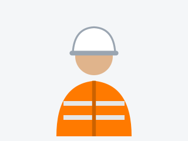

Integración de nuevas herramientas
Incorporo herramientas digitales a la gestión de la seguridad para registrar, ordenar y dar seguimiento a la información, y así lograr los objetivos de manera más eficiente.

Alexander Zerr | Seguridad e Higiene
Soy Licenciado en Seguridad e Higiene y busco adquirir nuevas herramientas para mi desarrollo profesional.
Mi objetivo es que la seguridad deje de verse solo como una obligación legal y pase a ser parte de la organización diaria de la empresa.

Incorporo herramientas digitales a la gestión de la seguridad para registrar, ordenar y dar seguimiento a la información, y así lograr los objetivos de manera más eficiente.
Cada empresa es distinta. Por eso parto de las condiciones reales de trabajo y priorizo lo que impacta en la operación diaria.